|
Midterm: Team Cyber
|
|
Midterm: Team Cyber
|
Project: Midterm: Cyber City
Team: DK3TM
Date: October 11, 2014
Kyle Cheng, Devin Gardella, Eli Goldstein, Matt LaRose, Tony Liu, Diwas Timilsina, Kai Wang, Kelly Wang, David Yan
| 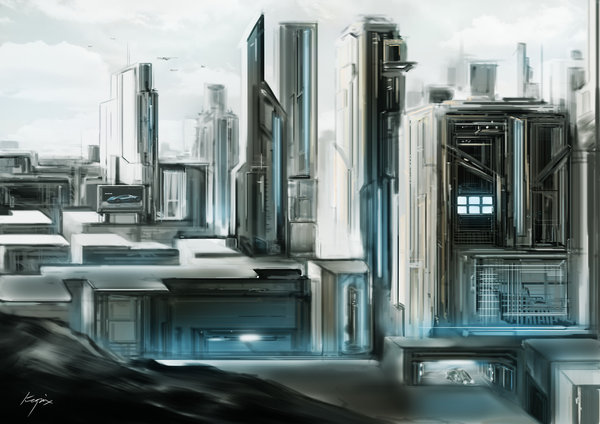 |
| "Future City" by Kopix |
| 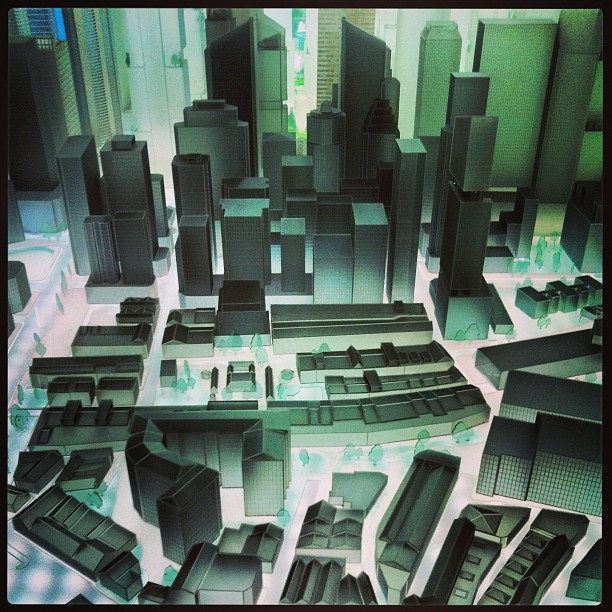 |
| "The future city" by Ken Banks |
Our vision was to generate a cyberpunk based city. In particular, we wanted to capture certain defining aspects of a cyberpunk city: futuristic (geometric and angular) and sprawling cities in a dark ambience.
Our team read “Procedural Modeling of Buildings” (Peter Wonka et al., 2006) at the beginning of our design process to get a handle on existing approaches to procedurally modeled buildings. We heavily adapted their concepts for our implementation, but what follows is a quick summary of the paper.
The paper presents CGA Shape, a shape grammar that produces building shells with high detail at low cost. The project was motivated by the fact that professional three-dimensional modeling is very time-consuming–for example, ``urban models in Superman Returns took 15 man years to complete.’’ The shape grammar contains a set of prioritized production rules, terminals, and nonterminals. In order to create a building, the production rules first create a mass model which models the general volumetric shape of the building. Then, more rules are applied which structure the building and finally add decoration and ornaments. Critical to this process is the fact that geometric information propagates through the production, allowing for much customizability and variability.
Rules are of the form– id: predecessor : cond; successor : prob – where id is a unique identifier, predecessor is a nonterminal, that is replaced with successor, cond is a logical expression that determines if the rule can be applied, and prob is the probability that a rule is selected. The authors were able to create more control in the derivation by assigning sets of rules to different priorities.
One critical type of rule that CGA Shape is the Split rule. These rules give their buildings their characteristic look, feel, and structured variety. WIth these rules, one can subdivide a nonterminal along any of their relative axes into many other nonterminals, specifying the relative sizes of each subcomponent. This allows for the buildings to have a certain number of different types of floors, one over the other. A second rule applied to floors could subdivide the horizontal axis to add windows spaced around the floor.
One very cool part of the paper was when the authors mentioned that a novice user of CGA Shape was able to create an extremely compelling city scene in two days. This paper was inspiring, and we appreciated reading it.
Included here is a link to the paper by Peter Wonka + co.: http://peterwonka.net/Publications/pdfs/2006.SG.Mueller.ProceduralModelingOfBuildings.final.pdf
Our program uses a combination of C++ and Python.
Our C++ portion of the code involved adding in utility features to the GUI. A new GUI window with buttons was added to execute the python programs we’ve written in this project. These buttons generate cities and test buildings. The “Generate city” button creates our basic city, which we will discuss the city creation part later in this overview (see the section on city.py and voronoi.py). The second button, “test building”, loads a random iteration of a specified building into the scene, and is for the building grammar team to quickly check what their buildings look like.
We have several python scripts that were generated by the building grammar team and the city generation team. The scripts are responsible for the procedural generation of buildings and city. They can be divided into three logical layers based on the physical scale in which they affect the overall city. The “top” layer is responsible for generating the entire city by calling building generation code from the “middle” layer. The “middle” layer deals with building generation. The “bottom” layer deals with object manipulation.
city.py is the centerpiece of the top layer. It can be run in the terminal or in the C++ GUI. It takes exactly one argument, which the name of the config(.cfg) file it is using. The config file specifies the building generators to be used, as well as all the parameters the selected building generator need such as width, height, length, and a random seed. We provide three different city generators, the grid generator (gridGenerator.py), random placement generator (randomPlacement.py) and the Voronoi Diagram Generator (voronoi.py). To generate our final scene, we chose to use voronoi.py. Each generator creates a list of building configurations (parameters for building generation and its orientation in the scene file), and returns this list to city.py through the method getBuildingList(). City.py will take the list, feed those inputs to the building generator (by calling generateBuilding()), get the building.obj files, and create the scene file.
On top of that, we also include a method to save and fine-tune the city. cityIO.py does that by calling voronoi.py’s (or any other city layout generator) getBuildingList() and, instead of creating the scene directly, writes the list of building specifications (width,length,height) to the city(.cty) file. The city file is a text file that we can edit, and can be passed to city.py as a config file for the actual city generation.
The core scripts of the middle level are building.py and buildingType.py. building.py interfaces between city and building generation by providing the generateBuilding() method called by the top layer. building.py in turn creates a building of the specified type. Each of the building generator classes (Kowloon, EliBuilding, TonyBuilding, KyleBuilding) inherits from the “Building” class defined in buildingType.py, which provides a few basic functionalities that all buildings need, such as setting the seed.
Individual buildings store their necessary model OBJs, which are abstracted via the lowest-level class, objectManipulator.obj, which supports basic operations on OBJs, such as reading, writing, translation and rotation, merging with other OBJs, and handling MTL files.
Working back up, OBJs are assembled by buildings, which are generated by the city in some layout.
 |
| Architecture Overview |
Buildings were generated according to the expansion of a few context-aware rules on different sets of primitives. Each building type has a different set of nonterminals and terminals, which are loaded directly from OBJ files, each of which contains its texture coordinates and material information. Nonterminals are stories (generally represented by cubes or clusters of cubes), for vertical growth. Building types also have expansion rules. For example, a certain nonterminal type might map to a set of functions like repeatUp, terminate, or decorate. Decoration creates outward expansion on a nonterminal of depth 0 or 1, appending wall decorators like windows or vents. Buildings exist within a grid whose dimensions are fed from the city generator. Within that grid, buildings choose blocks in which to build, and build using stacks of objects (OBJs), with a particular stack corresponding to a cell on that grid.
In order to most effectively leverage our group size, we decided to work on different building types in parallel. All of our buildings extend a common base class in Python, but we all implemented the actual build process differently. A common feature shared among all of our buildings is that they are constructed in a 3D cube grid fashion. Our different building generators just define different expansion rules for placing cube sized primitives into this 3D grid.
Buildings take a random seed (automatically set it in the Building superclass), which allows the same city and buildings to be regenerated, and the building generator takes an integer type, which determines which class of building to generate.
Below we describe in more detail a couple example building generation schemes.
Kowloon has a simple generation scheme. It starts off by choosing some floorplan, ie, points on top of which it can build. Its axiom is cubes, and so it places cubes at those points. Then, it applies one of a couple functions, which either terminates that particular stack in some way, or isolates some section of the building and repeats it upward. This creates chunks with a good amount of randomness.
The generation process for these buildings involves several steps and is distributed across several different classes. The classes involved are:
TestBuilding.py Features.py GenericClasses.py
TestBuilding is the main class. It loads in the primitives for use, creates the individual building types, and places the results on a grid. Features.py describes behaviors for decorational primitives such as chimneys and rooftops. GenericClasses.py stores global information and the Point class. Please note that all other classes mentioned here are contained in the TestBuilding.py file.
Building generation starts with the RectPlacer class. RectPlacer takes in four lists of lists of primitives, each list defines the primitives that will be used to create the corners and wall sides of the building. Each input list contains three lists. The first list defines bottom behavior, the second middle behavior, and the third top behavior for a given column side in the building. I define unique building behavior by giving different instances of the RectPlacer class different primitives. The RectPlacers have a method which causes them to generate a rectangular object with its input primitive lists.
A given set of RectPlacers might define a set of rectangular building elements that look like the bottom portion of a building. This set is passed as input to the Expander class. Expanders randomly expand out one of their RectPlacers, they then return another Expander. A given Expander could describe the set of RectPlacers that defines the bottom portion of a building, thereby making that Expander a starting Expander. Another Expander might describe the set of RectPlacers that defines the middle of the building or the top of the building. Bottom Expanders expand into middle expanders, middle expanders into top expanders. However, to increase variation a bottom expander can expand into a middle expander but it can also expand into another bottom expander (with lower chance). An example of this behavior in the code:
An example:
Expanders are controlled by BuildingPlacers. Expanders control how buildings grow in the vertical direction, BuildingPlacers determine where the building starts growing and how wide it should be in the xz plane. In the final building generation code, I created many different RectPlacers, grouped RectPlacers that looked like the bottoms of buildings, the middle of buildings, etc, and gave them to different Expanders. I then gave Expanders to different BuildingPlacers. Whenever a buliding is created, a random BuildingPlacer is chosen and the expansion process described above is activated.
The end result is a very scalable random building generator with a good degree of variation. Some images below:
 |
| FLAT building 1 |
 |
| KK building 2 |
 |
| Big Building |
Our primitive team created over 50 unique primitive models
Number roofs: 3 (infinite combinations for more complicated roofs)

| 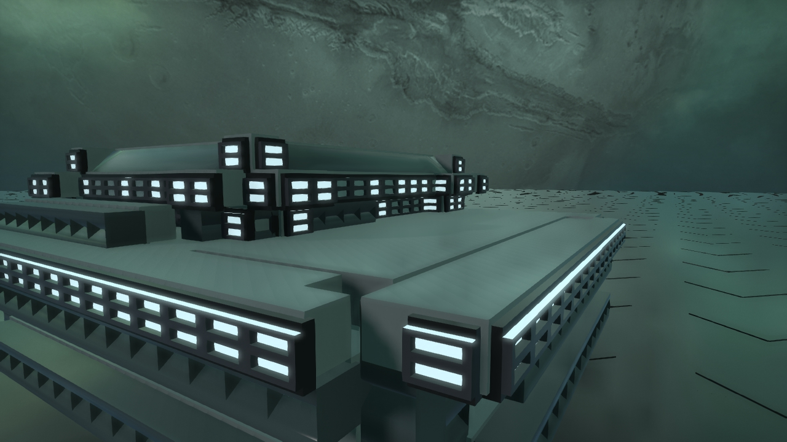 |
| Advanced roof |
Number spires: 1 base type
| base cylinder combo |
 |
| Spire in practice |
Number wall expansions: more than 5
The entirety of our scene is built from .obj primitives made by our team in Blender. We looked at our inspiration images to see how the architecture was defined and took suggestions from the building generation group to choose which primitive to generate. These files went into a library of primitives that the teams could view and comment on. We also utilized blender to texture our primitives. As the other team defined their buildings, we customized textures for their models and the overall theme of our scene. Most of our primitives just have a material with a defined color profile (Kd, Ke, Ks …). To make some buildings stand out, mainly the rust on the Kowloon building, we used primitives with a predefined texture on them. To add this texture to the primitives we just laid a picture over the material that defines the primitive using a UV unwrapping method in Blender. Since we were planning for a city during night time, we also need to make some of our windows emissive to increase the light in the scene without adding a global light. Since we were unable to make primitives generated from blender to directly have emissive property, we had to manually go into the mtl file for the primitives add the Ke values. Here are some pictures of the primitives that we created to build buildings:
| 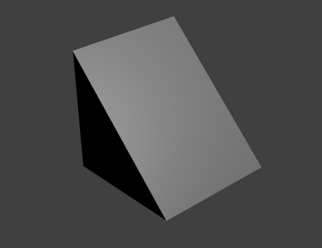 |
| Example of a simple primitive |
| 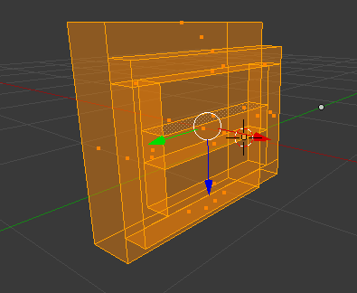 |
| Another primitive with wireframe |
 |
| Primitive with emissive property |
| 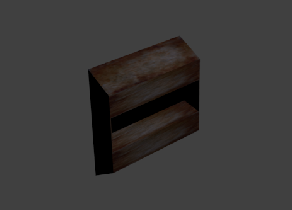 |
| Textured Primitive |
Textures are defined for singular primitives. The object manipulator class, when it translates and appends objects, is aware of the textures of each primitive and maintains the material file data for each. After appending objects, the resulting object will have a single material file with the unique set of materials used for the building. This allowed portability, and because we used a seed, there was no issue when we needed to re-develop a particular building with new materials.
We provide three distinct generators for city generation, using grid, random placement and Voronoi diagrams.
gridGenerator.py is the first one that we implemented, it places the building in a tidy grid layout. It generates buildings for random types (ie. choosing between the building types created by Eli, Kyle, Matt, and Tony), and assigns them to positions in a regular grid-like fashion. The number of buildings per row/column in our grid, as well as street size, are set in the config file for this class. The height is determined by randomly designating locations in the city as hotspots for either tall or short buildings. Buildings closer to a hotspot are more likely to have heights that are tall/short according to the type of hotspot.
randomPlacement.py places building in a total random fashion. If the number of building placed is large enough, a certain degree of order is going to appear. This generator is created basically to test if each of our buildings look nice when colliding with each other. After thorough testing, we’ve come to the conclusion that we don’t need to focus on avoiding collisions as the buildings typically look nice when overlapping with each other.
voronoi.py is the most complicated one of the three, and is the generator we eventually used in the final scene. It is built using the concept of voronoi diagram. A (2D) voronoi diagram partitions space into regions with a set of specified reference points. A region is defined as the set of points that are closest to one of the reference point. In our generator, manhattan distance, which is the sum of horizon distance and vertical distance, is used instead of the normal Euclidean distance, which makes the regions more regular.
The set of reference points is defined is defined in a voronoi (.vor) file. A voronoi specifies all the reference points used to create a voronoi diagram. In addition to that, other parameters are also added to specify the properties of the region defined by the specific reference point. Parameters include:
Tidyness: Describe the tidiness of the region. Buildings are placed in one of the two ways: either total random placement with (non-uniform) random rotation(yaw), or placement in regular grid without any rotation. This parameter specifies the probability of each, a value of 1.0 results in regular grid layout and a value of 0.0 results in total random placement. In practice, value around 0.7 is used to have a rather tidy layout with interesting variations.
| 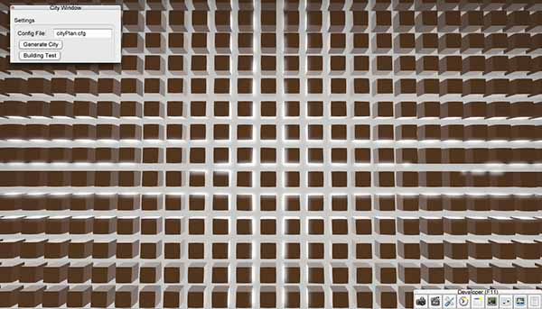 |
| Tidiness=1.0 |
| 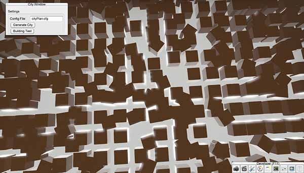 |
| Tidiness=0.7 |
| 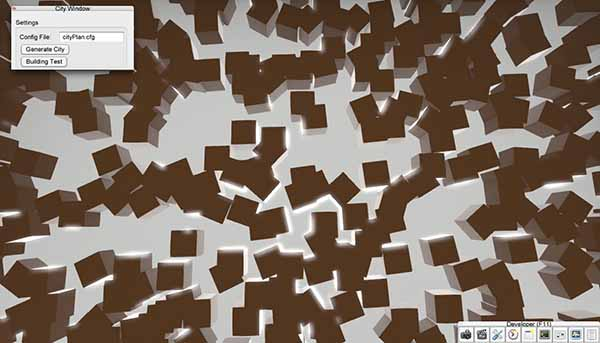 |
| Tidiness=0.0 |
Height, width, length: gives function for the dimension of the buildings. It is defined as a function of a, which is a random value between 0 and 1. For example, a value of 60+20*a gives uniform height(width/length) distribution between 60 and 80. In practice, cubic functions (e.g.60+20*a*a*a) are used so there will be more smaller buildings and fewer larger buildings
| 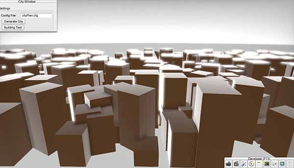 |
| Linear height function |
| 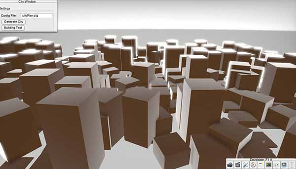 |
| Cubic height function |
The generator will create the regions from the specified points, and iterate through each region and generate buildings according to the given parameters. Furthermore, we also implemented subpoints that enable dividing each districts into sub-districts. It is achieved by creating a sub diagram within the region. Each sub-district can be given separate parameters, or it could inherit the parameters from its parent.
Finally, an arbitrary collision avoidance is implemented. Each point in the diagram is assigned with a collision value from 0 to 1. When we are about to place a building on the point, we run a roulette and only place the building when the random number is greater than the collision value. Clearly, by setting the collision value for roads to be 1, we could avoid placing any building on the roads. Whenever we place a building, we set the collision value of its location to be 1, so no two buildings can be placed at the same spot. Then, we increase the collision value of the surrounding region, which decreases quadratically with the distance. By doing so, we decrease the probability of collision while keeping some collison to keep the layout interesting.
| 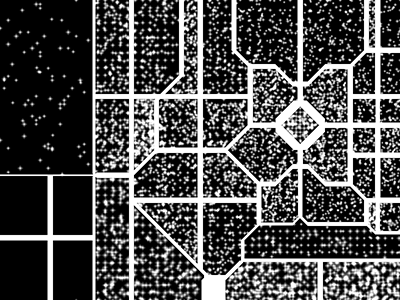 |
| 2D View of finished layout |
| 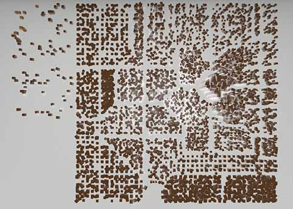 |
| 3D View of fininished layout |
The layout generated by the generators are then passed to city.py for actual scene generation, as described in the architecture overview above.
 |
| Finalized layout |
We created the presentation using a shared Google Doc. We decided on what would be a proper progression of topics, decided on a minimalist theme, and then split into groups to make individual sections of the presentation. Jamie shared with us an excellent tip for organization, which was to have a roadmap that appeared throughout the presentation, indicating what has been said, and what is left, in order to better orient the audience. We divided the presentation sections among a couple people, so they could focus on individual aspects of it.
Our film draws from the cinematographic style of “the Timeless” by Mercury, and from various city tour videos. The style of the Timeless suits our cyberpunk theme well because of the soaring camera movements through the tall buildings and narrow streets, and the night time scene lit by neon lights, but we also wanted to emphasize the uniqueness of and within the city itself, which we did by emulating the city tour shots. In general, our film features a wide establishing shot in the beginning, showing the overall layout of the city, and close-ups with a moving camera that investigate each individual building and navigate through the varied and unique spaces within the city. Our shots were all created by hand, using splines in the G3D preview renderer.
To begin, we assembled some shots from Timeless and a couple other city shots, and assembled them using iMovie as an initial storyboard for our final film:
 |
| the first rough sketch of the shots we plan to use in our film |
 |
| a screenshot of the film version of the storyboard |
 |
| shot 4 of the storyboard |
Then, as we made progress in our building and city development, we replaced scenes in the storyboard video with our own footage. So, initial versions of our film included shots from a grid city with our early prototype buildings:
| 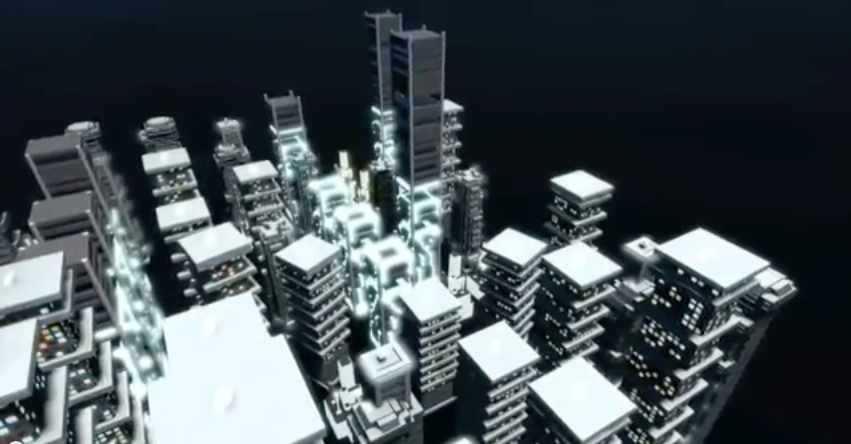 |
| Establishing Shot from our minimum viable film |
| 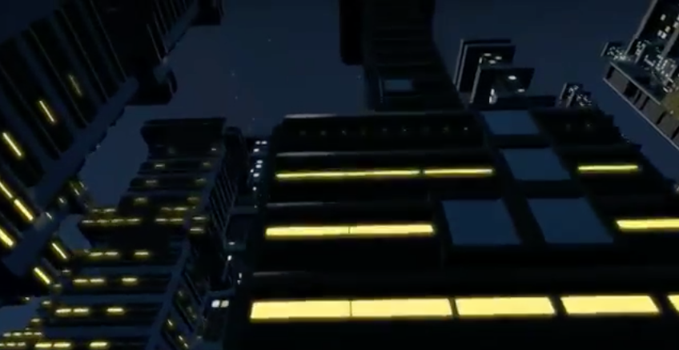 |
| This shot shows the building at an angle and follows the facade upwards |
| 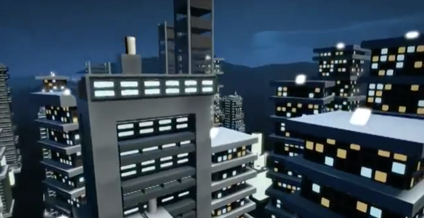 |
| This shot starts from a close up and zooms out |
Once we had the full city completed and ready to record, we followed a similar process with our final city. We replaced scenes as closely as possible from our demo with the updated versions of our completed city.
For the wide panning shots of the full city, we had to employ a few tricks to set the splines up correctly. Because the full city was enormous, testing splines on the full scene was prohibitively slow. Instead, we generated the layout we wanted using the city layout generator, but placed cubes instead of the full buildings, and then manually fine-tuned a few building placements. We then set up splines for the wide shots using the cube city, sometimes adjusting field of view in the camera settings. We loaded Devin’s computer (which is much faster than the lab iMacs) with the actual buildings the cubes represented (and even had the same names, so we did not have to rewrite anything in the scene file). App.cpp was modified so that the desired camera was loaded and the video set to record automatically, and then stop recording automatically after a certain number of seconds. This allowed us to combat the difficulties of the slow rendering process.
Close-up shots within the city were set up differently. Certain shots could not be faithfully replicated from the Timeless with the city we generated. The primary reason was that having the whole city on scene when we only needed a small part would be too slow. Further, rendering small segments separately allowed us more precise control over the scene itself. We generated random districts (ie, sections of the city) with fewer buildings using our city layout generator, and reorganized the buildings and placed the splines by hand in a way that best replicated the shot we wanted. For these closer shots, we frequently modified the tone curves to get nice lighting. We were able to render smaller segments on the iMacs in the lab. Some examples of the mini city “sets” and the camera splines across them:
 |
| Long Shot 2 |
 |
| Interior Shot |
While selecting music for the film, we believed that a techno feel would be the most in line with our motivating vision. However, since our shots in the city don’t have as much movement as The Timeless, we looked to music that was less fast paced, and provided a regular beat in the background to go with our smooth, slow camera movements through the city.
We made some deliberate choices with cinematography and editing, namely in our establishing shot, and in the shots that reveal the buildings when the camera rounds a corner. The film opens with some mysterious shadowy buildings in the foreground occluding the view of the city. Next is an establishing shot of the city that is revealed once the camera clears the tops of the buildings. (This emulates the extreme close-up in the introduction segment of the “5 Faces” video by Fairlight & Cloudkicker (2013) we saw a couple weeks ago). The viewer gets a nice clear view of the city layout, and the tall, emissive tower, which is at the heart of the city. Near the middle of our movie where the music picks up slightly, the camera looks straight up at the buildings and zooms down the street. The basic shot is composed so that there is a strong vertical rhythm across the screen, emphasizing the striped patterns on the buildings formed by the narrow windows. The camera also picks up speed, which is consistent with the subtle change in the music. The shot immediately afterward shows off a unique room inside one of the buildings. The camera flies in through a window, taking the viewer into a compressed space, and then flies out on the other side, and again the city is revealed with the tall tower nestled among the other buildings. All the cuts are straight cuts that also line up with the down beats in the music.
| 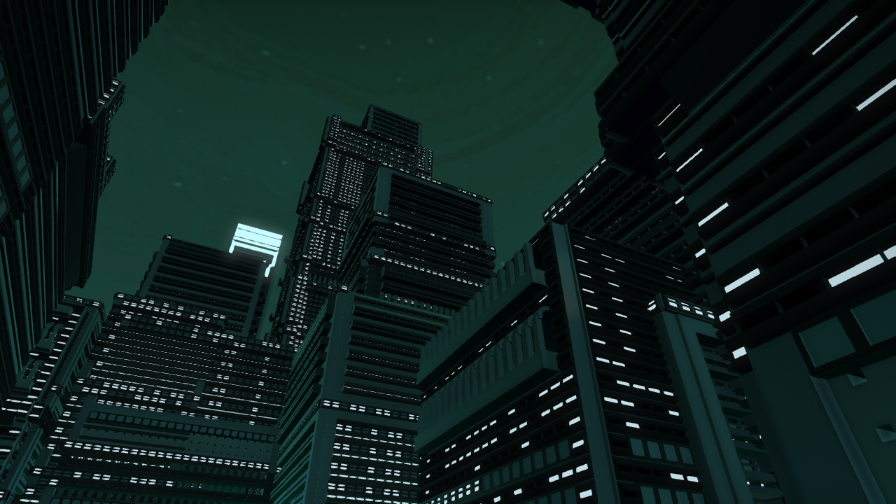 |
| Looming Tower |
| 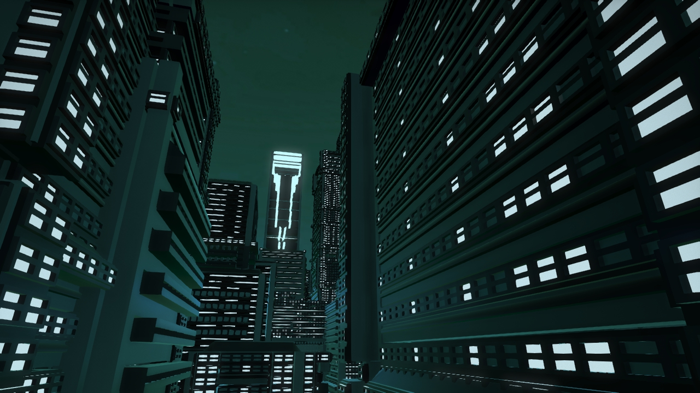 |
| TonyTower in the distance |
| 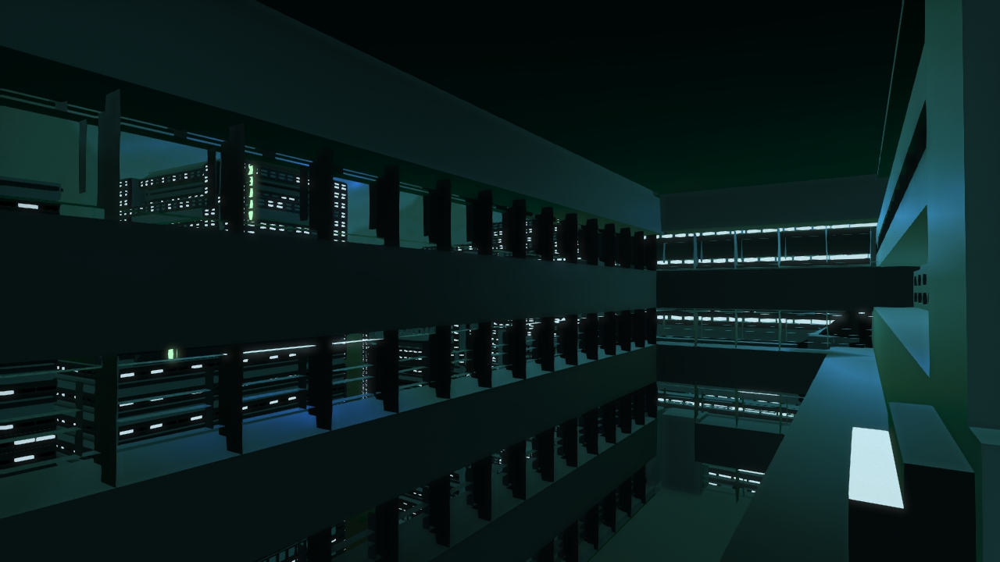 |
| Interiors too! |
 |
| Kind of has that city “underbelly” feel |
| 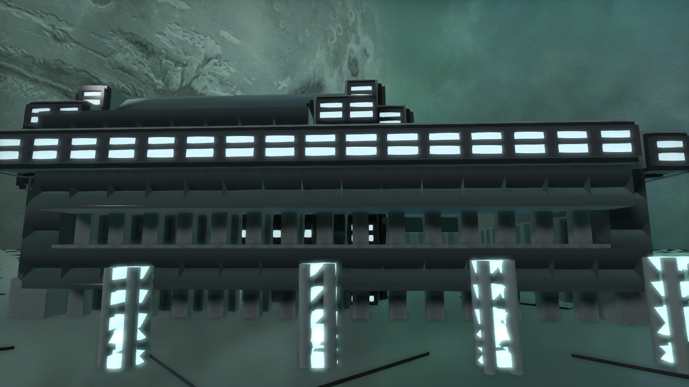 |
| Demonstrating street lamps |
Our images were taken at 1280x720 pixel resolution, captured using the internal G3D viewer.
▶ Play Video |
| Video result |
Images
Inspiration images:
"Future City" by Kopix : licensed under CC ND 3.0
"The future city" by Ken Banks : licensed under CC BY 2.0
Kowloon inspiration images:
By Hmaglione10 (Own work) [CC-BY-SA-3.0], via Wikimedia Commons
By Author: Jidanni (Edit of Image:19890327hk.jpg by Stevage) [GFDL or CC-BY-SA-3.0], via Wikimedia Commons
Software
We used png.py, a PNG encoder/decoder in pure Python to get pixel values from a given png object. The file is under the MIT license, copyright Johnann C. Rocholl, David Jones, and Nicko van Someren. Licensing and copyright can be found at the head of the relevant file.
We also used Blender (www.blender.org) to create primitives and generate our building objects.
Texture
We used a rusted texture from TextureX.com website. http://www.texturex.com/Grunge-Textures/TextureX+spotted+grunge+rust+metal+stock+Texture.jpg.php
Publications
Pascal Müller, Peter Wonka, Simon Haegler, Andreas Ulmer, and Luc Van Gool. 2006. Procedural modeling of buildings. ACM Trans. Graph. 25, 3 (July 2006), 614-623. DOI=10.1145/1141911.1141931 http://doi.acm.org/10.1145/1141911.1141931, Source at http://peterwonka.net/Publications/pdfs/2006.SG.Mueller.ProceduralModelingOfBuildings.final.pdf
Music
Song: Point of Departure by VeraIcon. Copyright Veronica O’Brien (2013) with permission of the artist (thanks to Tony).
https://soundcloud.com/veraicon
See also our Development Journal .
 1.8.9.1
1.8.9.1


{kind=link}
{kind=link}
{kind=link}
{kind=link}
{kind=link}
{kind=link}
{kind=link}
{kind=link}
{kind=link}
{kind=link}
{kind=link}
{kind=link}
{kind=link}
{kind=link}
{kind=link}
{kind=link}
{kind=link}
{kind=link}
{kind=link}
{kind=link}
{kind=link}
{kind=link}
{kind=link}
{kind=link}
{kind=link}